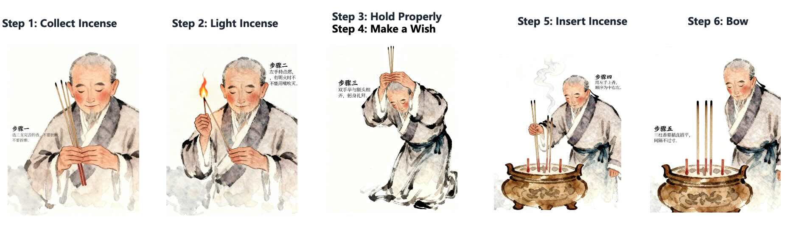

Table of Contents
Introduction: Discover Yonghegong Lama Temple
Yonghegong Lama Temple, often simply called Lama Temple, is one of Beijing's most important Tibetan Buddhist temples and a must-visit cultural attraction for foreign tourists. Remember the 2024 incident when a renowned American fashion designer and their entourage were denied entry to the Forbidden City due to their outlandish attire? That incident sparked widespread discussions about respecting cultural sites. Just as the Forbidden City upholds strict dress codes to preserve its dignity, sacred places like Yonghegong (Lama Temple) also require visitors to observe proper etiquette. Knowing these customs not only ensures you gain entry smoothly, but also allows you to participate in rituals with sincerity, fully immersing yourself in the profound spiritual atmosphere of this ancient Beijing temple.
Located in the heart of Beijing, Yonghegong Lama Temple attracts millions of visitors each year who come to admire its magnificent Qing Dynasty architecture, learn about Tibetan Buddhism, and seek blessings. Whether you're interested in religion, history, or architecture, this comprehensive guide will help you navigate your visit with confidence and respect.
Yonghegong Lama Temple is Beijing's largest and best-preserved Tibetan Buddhist Gelugpa monastery. With over 300 years of history, this sacred site has a unique heritage: originally built in 1694 as the residence of Prince Yong (Yongzheng Emperor), it was converted to a royal palace after Yongzheng ascended the throne, and then transformed into a Tibetan Buddhist monastery in 1744 during the Qianlong era. Interestingly, Qianlong was also born here, making Yonghegong known as the "Dragon's Lair of Two Emperors."
For first-time foreign visitors, Chinese temple etiquette, blessing rituals, and cultural taboos can be quite different from Western traditions. This guide explains everything in simple, straightforward terms — from pre-visit preparation to incense offerings, photography rules, and common taboos — so you can visit respectfully and enjoy this unique cultural experience.
1. Pre-Visit Preparation: Tickets, Booking & Dress Code
1.1 Tickets & Entry Rules
Advance booking is recommended through the official WeChat account (Chinese only), but on-site ticket purchase is also available. If you need booking assistance, contact us
The temple implements strict security checks — outside incense, lighters, and flammable items are prohibited and will be confiscated.
1.2 Dress Code (Most Important!)
As a sacred religious site, proper attire shows respect:
✅ Recommended
- Long pants or knee-length skirts
- Long-sleeve shirts
- Conservative, modest clothing
❌ Not Allowed
- Sleeveless tops or tank tops
- Short shorts or mini-skirts
- Flip-flops or revealing shoes
- Distressed or overly casual clothing
Pro tip: You don't need traditional Chinese clothing — smart casual wear is perfectly acceptable. The key is to cover shoulders and knees.
1.3 What to Bring
Bring your passport/ID, bottled water, and comfortable walking shoes. The temple provides free incense at the entrance, so no need to buy any outside. There are free drinking water stations and rest areas throughout the complex.
2. Basic Entry Etiquette: Don't Make These Mistakes
2.1 The Threshold Rule (Easiest to Get Wrong)
Every temple gate and hall has a raised threshold. Never step on or sit on the threshold — always step over it.
Traditional customs suggest"men left, women right" — men step over with the left foot first, women with the right. If you forget, simply stepping over normally is perfectly fine.
Notice: The main gate is usually reserved for religious ceremonies; visitors should use the side entrances.
2.2 Walking & Behavior
Maintain quiet throughout the temple — no loud talking or laughing. Follow the clockwise path when touring; don't walk backwards or against the flow. Never touch statues, religious artifacts, or climb on buildings/railings.
3. Complete Incense & Blessing Ritual (Step-by-Step)
Free incense is available at the free incense counters near the Zhaotai Gate. Here's how to perform the ritual properly:
6-Step Incense Ritual
- Step 1: Collect Incense - Each person receives 3 sticks of incense, representing wishes for peace, health, and good fortune.
- Step 2: Light Incense - Use the fire provided at the incense burner. Never blow out the flame — gently fan it out with your palm.
- Step 3: Hold Properly - Hold the incense with both hands (left hand outside, right hand inside) and raise it to forehead level.
- Step 4: Make a Wish - Close your eyes and silently state your wish. You can introduce yourself and your origin if you like.
- Step 5: Insert Incense - Place the incense in the burner: middle stick first, then right, then left.
- Step 6: Bow - Join your palms together (leave a small space between them) and bow 1-3 times. No need to kneel if you're uncomfortable.

Note: Even if you don't follow any religion, performing this simple ritual shows respect for the culture and traditions.
4. Main Halls & Their Blessing Meanings
Each main hall has specific blessing focuses. Visit according to your needs:
🏛️ Main Halls
| Hall Name | Chinese Name | Main Blessings |
|---|---|---|
| Yonghe Gate | 雍和门 | Peace, safety, and smooth journeys |
| Yonghe Hall | 雍和宫 | Career success, financial fortune, and overall luck |
| Yongyou Hall | 永佑殿 | Health, healing, and well-being for family members |
| Falun Hall | 法轮殿 | Academic success, exams, and career advancement |
| Wanfu Pavilion | 万福阁 | Family fortune and overall prosperity. Many visitors walk clockwise around it three times. |
🗺️ Temple Map

5. Photography & Video Guidelines
✅ Allowed
- Outdoor courtyards and gardens
- Red walls and exterior architecture
- Public walkways and squares
❌ Prohibited
- Inside temple halls
- Statues and religious artifacts
- Monks without permission
- Other worshippers' faces
Important: Always turn off your flash — bright lights are considered disrespectful to sacred objects.
6. Common Taboos & Mistakes to Avoid
✅ Recommended Practices
- Dress modestly and neatly
- Step over thresholds
- Fan out incense flames (don't blow)
- Walk clockwise
- Keep voices low
- Respect others' prayers
❌ Strictly Forbidden
- Wearing revealing clothing
- Stepping on or sitting on thresholds
- Blowing out incense flames
- Walking counterclockwise
- Loud talking or laughing in halls
- Buying "blessed items" from street vendors
7. Additional Tips for a Great Visit
7.1 For Non-Religious Visitors
If you're just interested in the architecture and culture, that's perfectly fine! You can skip the incense ritual and simply enjoy the beautiful buildings and artwork while maintaining basic etiquette.
7.2 Nearby Attractions
After visiting Lama Temple, explore nearby:
- Guozijian (Imperial Academy): Ancient educational institution
- Confucius Temple: Tribute to Confucius
- Nanluoguxiang: Historic hutong area with cafes and shops
- Wudaoying Hutong: Trendy street with boutiques
7.3 Best Time to Visit
Avoid weekends and holidays for fewer crowds. Early morning visits offer a more peaceful atmosphere. The temple looks especially beautiful during autumn (October-November).
Conclusion
Yonghegong Lama Temple is more than just a religious site — it's a window into China's Qing Dynasty architecture and Tibetan Buddhist culture. The essence of Chinese temple etiquette is simple: show respect. By following these basic rules, every foreign visitor can have a meaningful and respectful experience.
After visiting Lama Temple, consider exploring other Beijing attractions. For a deeper cultural immersion, try a traditional Hanfu experience or discover more about Beijing's top destinations. We hope this guide helps you enjoy your visit to Lama Temple and create wonderful memories in Beijing!
Share this article:
Link copied to clipboard!